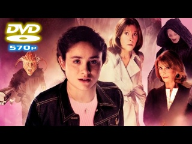
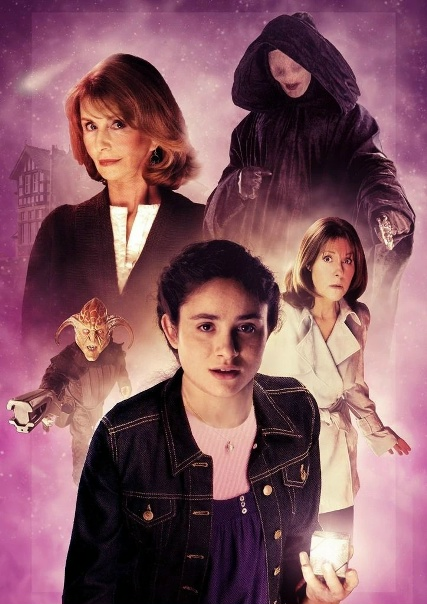

Whatever Happened to Sarah Jane?
Дата выхода: 29 октября - 5 ноября 2007
Формат: 2 эпизода по 30 мин.
| Варианты озвучек: | * Разные: смотрите по инструкции |
|---|---|
| Скачивание и просмотр: |
Однажды Мария Джексон просыпается и обнаруживает, что Сары Джейн не существует, и только лишь она помнит о ней. Её место занимает Андреа Йейтс, и Мария понимает, что она сделала нечто, чтобы устранить Сару Джейн. Марии предстоит узнать кто такой Трикстер ради спасения всего человечества - и её придётся действовать в одиночку, так как Люк был стёрт из истории, и Клайд забыл об их совместных приключениях. Возможно, настало время для Марии рассказать её отцу чем она на самом деле занимается с Сарой Джейн.
